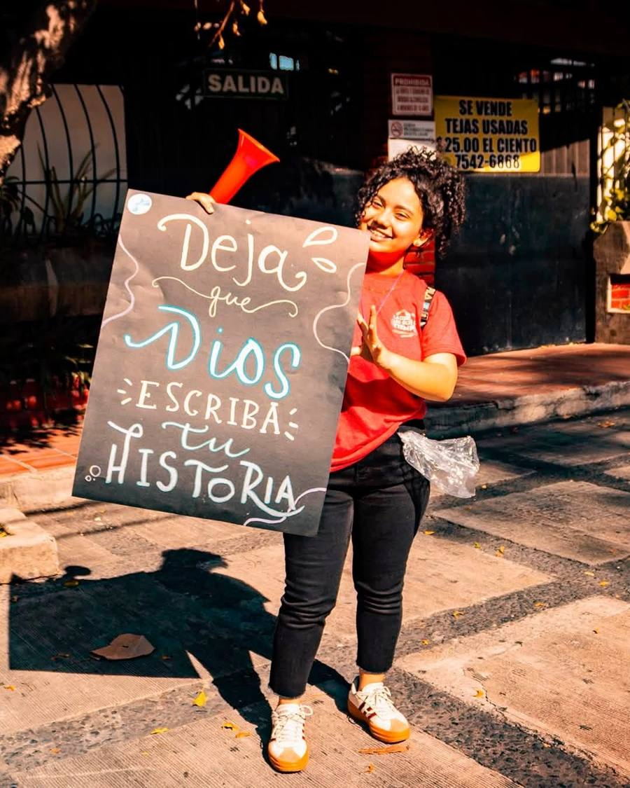
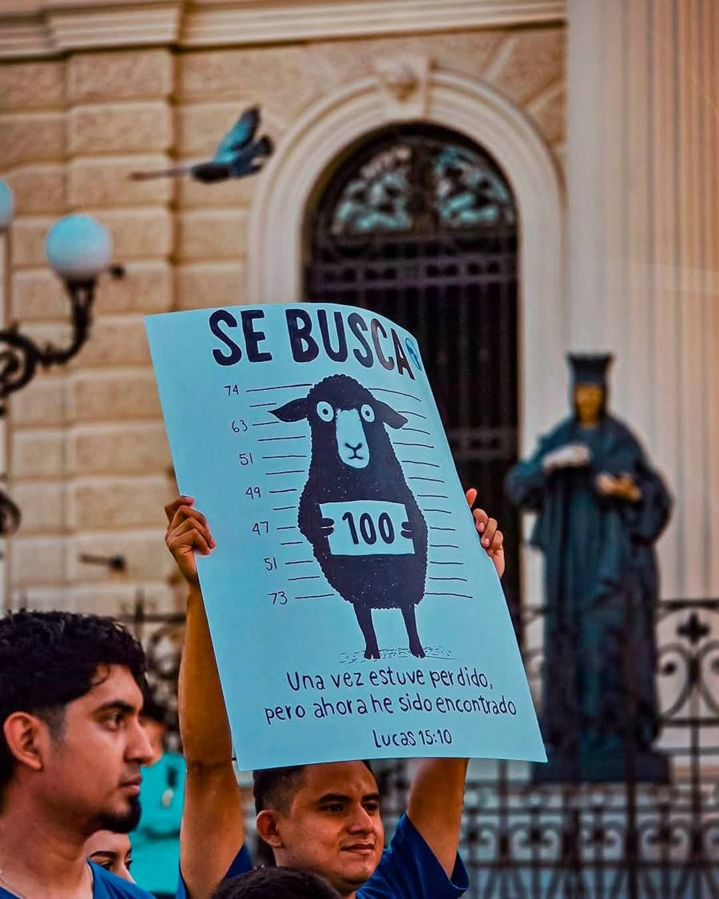
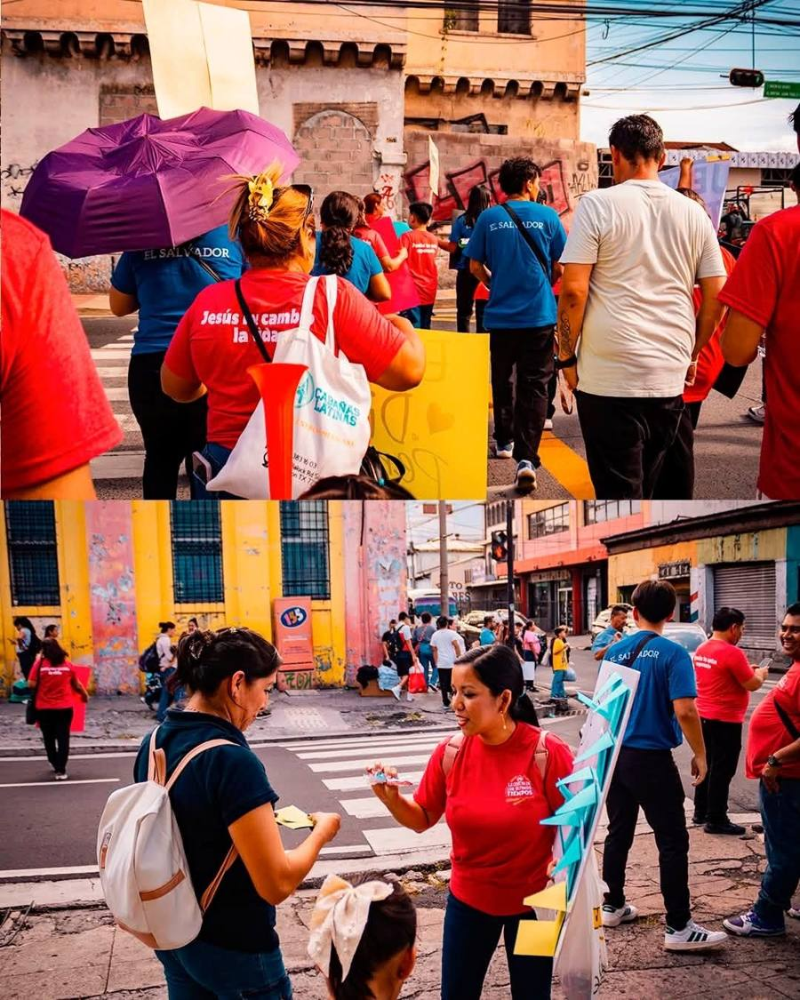
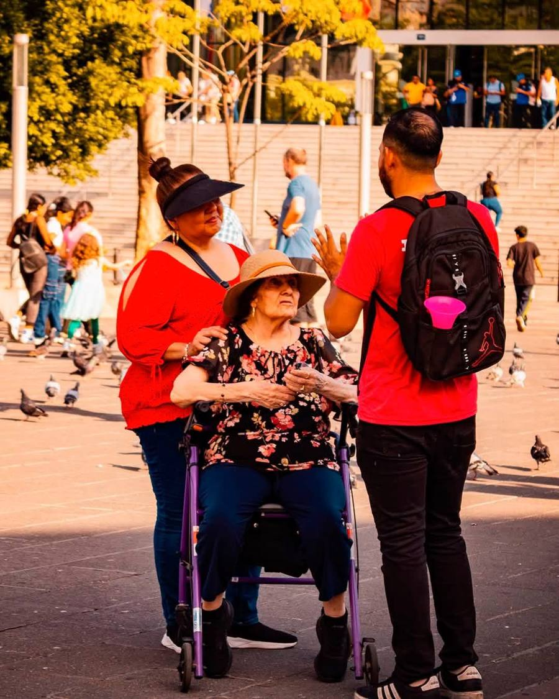
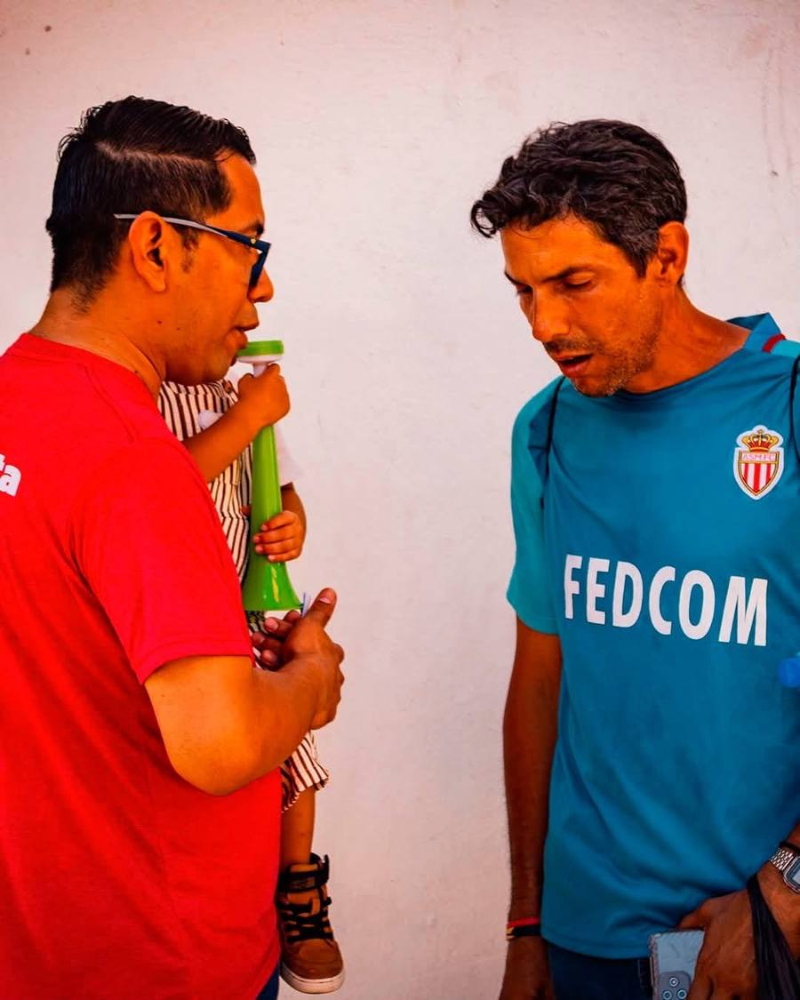

Qué hacemos
Así es una invasión evangelística
Salimos juntos
Hermanos de todas las edades, con camisas rojas y azules, recorremos calles y plazas de la ciudad en equipo.
Un mensaje en cada cartel
Llevamos carteles con palabras de esperanza y pasajes de la Biblia para que todos los lean.
Conversamos con las personas
Nos acercamos a saludar, escuchar y compartir una invitación a conocer a Dios y visitar la iglesia.
Galería
Momentos en la calle





Sé parte de lo que Dios hace en la ciudad
19 Calle Poniente, entre 1 y 3 Avenida Norte, #232. Barrio San Miguelito, San Salvador.